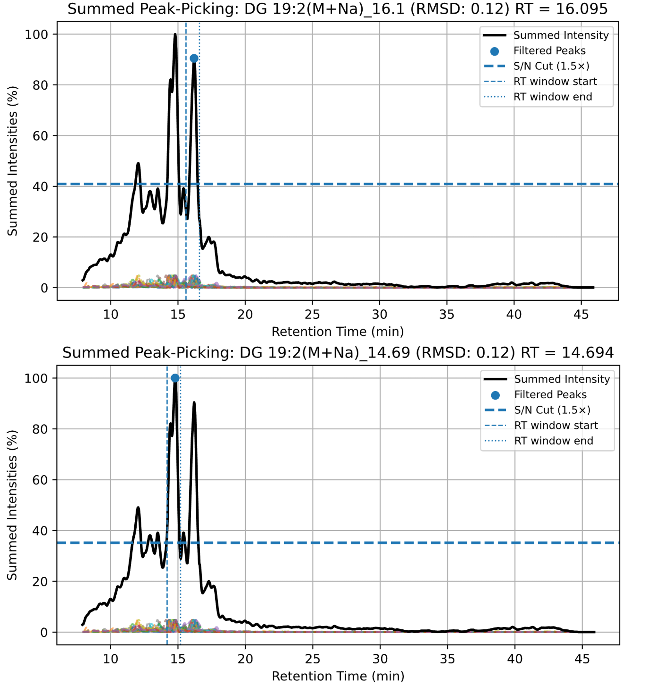

Accurate kinetic quantification depends on consistent isotopic envelope extraction across all samples.
Even small retention-time drifts between runs can distort extracted-ion chromatograms (EICs), causing
mis-sampled envelopes, noise in turnover fits, or misassignment of overlapping isobars (molecules with the same molecular mass).
Isobar Handler resolves these issues by aligning retention times empirically using a Legendre-polynomial
morph and generating a summed reference frame that highlights "real" analytes.
Why alignment is essential
Single-RT assumptions: Using one retention time per lipid across all .mzML files forces envelope sampling at fixed times, ignoring slight differences in the chromatography between runs. This results in our kinetic software DeuteRater sampling the wrong retention time space, adding noise to our kinetic analysis.
Direct MS-DIAL transfer:Retention time differences can cause MS-DIAL to identify the same lipid at multiple retention times, producing artificial duplicates and biologically impossible abundance fold-changes.
Our approach — Legendre morph and summed reference frame
Each run is aligned to a reference MS¹ file (selected or auto-chosen) using a Legendre polynomial
of configurable degree (default 5), with coefficients optimized via SciPy’s differential-evolution solver.
All EICs are then morphed into the reference time frame, summed, and normalized to stabilize peak centers.
Peaks within ±30 seconds (typical ±15–30 s) of the reference RT on the summed trace are retained.
Candidate peaks must satisfy percent-of-max (default 5%), S/N (default 1.5× baseline σ),
and absolute-intensity thresholds. After summing together and picking peaks within the reference frame, each accepted center has an inverse polynomial applied and is subsequently snapped to the local maximum
in its native file. DeuteRater subsequently samples
file-specific, peak-centered RTs, ensuring reproducible envelope extraction for kinetic modeling.
Inputs
Prepared Guidefile originating from MS Dial and converted to IH/DR column syntax
MS1 files to be aligned.
Note: All of our MS2.mzMLs are labeled 'PQC' so we filter the files we need with the File Explorer search command "NOT PQC AND *.mzML". You can do something similar.
A designated reference .mzML.
Outputs
Per-file refined RTs used for downstream DeuteRater analysis.
QC plots showing summed-vs-reference mTIC overlays and per-lipid summaries.
A portable project archive containing all cached data and parameters for reproducibility.
Typical parameters (defaults)
Component
Default
Notes
Legendre degree
5
Configurable; governs polynomial smoothness.
Fit downsampling
1/25
Improves computational efficiency.
Peak window
±30 s
Tunable; ±15–30 s typical for lipidomics data.
Percent-of-max cutoff
5 %
Applied to normalized summed trace.
S/N cutoff
1.5 × σ
σ estimated from local baseline region.
Automated process overview
Build EICs per run: Extract MS-DIAL-guided targets from each .mzML.
Fit morphs: Align each run to the reference using Legendre polynomials (ref ↔ target) via SciPy optimization.
Unify and sum: Warp all EICs into the reference frame, sum normalized traces, and verify absolute intensities.
Select centers: Detect peaks within ±30 s of expected RTs; apply S/N and percent-of-max filters.
Back-transform: Map centers back to native files, snap to local maxima, and export *_RT_sec and *_Abn tables.
Normalize and export: Apply TIC normalization*, generate QC plots, and save the reproducible project archive.
*Although Isobar Handler can estimate abundances via Gaussian fitting, all abundance values in our kinetic analysis are taken from DeuteRater.
Steps to use
Load your CSV file with the Load CSV button.
Click Automated Alignment.
The program will ask you to choose a reference .mzML file. Select it.
The program will then ask you to select all of the files to be aligned. Select all of them including the previously chosen reference file.
When the alignment is finished click Export Project , where you will choose an output location for results files. This is where your final dataframe (important for next steps) will be found.

Example of Summed Peak-Picking: After converting all files into a common reference frame and summing the extracted ion chromatograms from each file (shown below in different colors), we can identify species that are consistently observed across files with the strongest signal. In this example, we identified two distinct retention times for DG 19:2 that exhibit sufficient intensity to pass our filtering criteria. These retention times are then reverse-transformed on a per-file basis to generate file-specific retention times for both analytes, which are used in downstream analyses. The retention time windows are centered on the retention times originally detected by MS-Dial. For consistency, we retain only analytes that fall within these windows, thereby relying on MS-Dial for initial retention time detection.